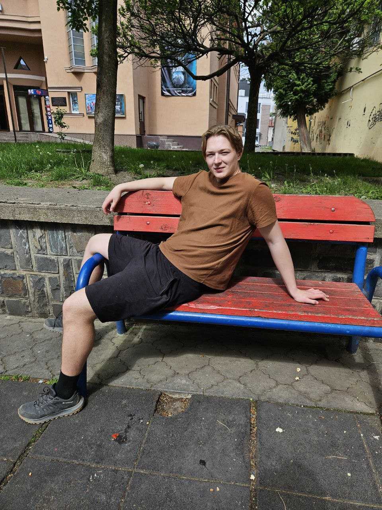

Олена Мацега(Попова)
Основне про себе
- Вік: 38
- Посада: пезробітння
- Проживаю: з майбним чоловіком
-

Про себе
Мене звати Олена. Мені 38, і моє лице пам’ятає більше подушок, ніж Ікеа за всю історію. Хтось скаже — «шльондра», я ж кажу — «жінка, яка не втратила час дарма». У мене не було принца, зате було штук 12 Толіків, 3 індуси й один голова ОСББ, який навчив мене, як не платити за воду. Район мною живе. Іноді плюється. Але головне — пам’ятає.
-
Історія олени
Олені 38. Весь район знає її так, як Google знає твої грішні пошукові запити. Колись вона була найгарячішою на районі — зараз просто гарячою, бо ще гріє пічку тілом. За її плечима — десятки чоловіків, дві депортації, три фейкових шлюби й один тюремний роман з аліментником. Вона — як стара флешка: на вигляд юзана, але там ще є цікаві файли.
-
Впіймала лоха
Познайомились вони у Telegram-чаті "Шукачі клієнтів і пригод". Вона шукала спонсора, він — сенс життя. Михайло випадково скинув їй мем про баги, вона відповіла фоткою в купальнику на фоні ларька "Шаурма і Краса". Звідти й пішло. Його пробило, як SQL-ін’єкція в дірявий Wordpress. Віч його ппрутень стояв, як сервер без охолодження — тихо, але небезпечно.
 -
Перевірка на вірність
Всі друзі казали Михайлу: "Вона тебе розкрутить як підписку на ChatGPT", але він стояв на своєму. Вона плакала, обіцяла, що це був «старий софт», і тепер вона апдейтнута, без вірусів. Він їй повірив. Вірив більше, ніж у те, що його pet-проект колись стане стартапом. Пробачив їй все: і сусіда, і бармена, і навіть той момент, коли вона на весіллі подруги познайомилася з його батей.
-
Пташка в клітці
Тепер вони готуються до весілля. Вона — в білому, хоч білий у неї тільки колір iPhone. Він — у костюмі з OLX. Вони не пара — вони патч, зліплений з багів і надії. Але кохання — як стара Windows: працює не завжди, але головне — щоб не згоріло.